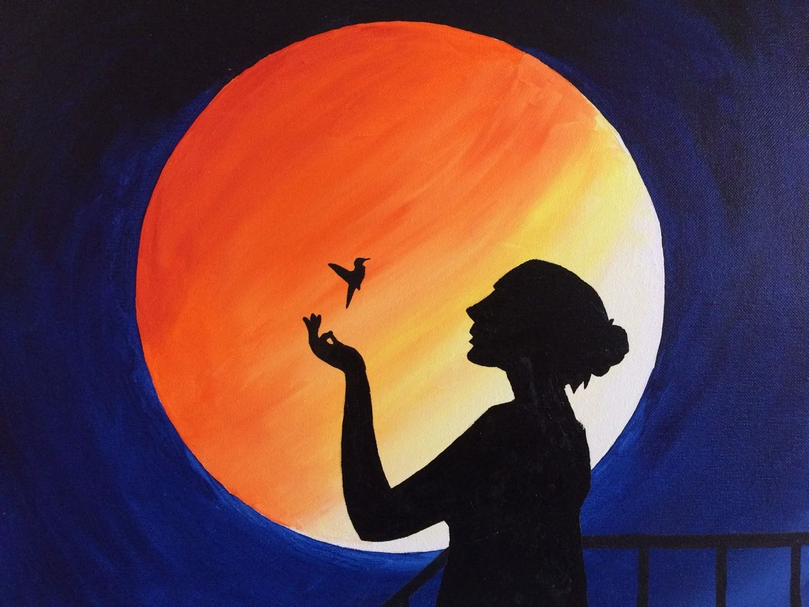

Hi! I am Akshara. my hobbies are to read books, play guitar and piano. I like painting. people say i am an artist. I also do Taekwondo. I am a blue belt holder in Taekwondo.
Taekwondo is a sport that I love. It’s been part of my life since I was a little kid. Taekwondo has taken over my life and changed it completely. It’s not just a sport to me, it’s a hobby that I love. I enjoy this hobby because it relieves my stress out, I interact with others, and because I stay physically active.
By Taekwondo being a physical sport, it takes my stress away. I remember one time I had too much homework and many chores to do and all I could think of is how am I going to get all of this done in time. That stressed me out. I also remember a problem I had with a friend. I didn’t know what to do or how to solve it. The only thing that could make me feel better and stress less was practicing Taekwondo. It always distracts my mind and makes me enjoy all the kicks I give and receive. After practice, I feel a whole lot better with a clear mind and that’s what makes me enjoy Taekwondo.
Books
I like to read books like fairy tales and comics. These books help us to improve our knowledgeand develope our reading skills.Reading is a very good habit that one needs to develop in life. Good books can inform you, enlighten you and lead you in the right direction. There is no better companion than a good book. Reading is important because it is good for your overall well-being. Once you start reading, you experience a whole new world. When you start loving the habit of reading you eventually get addicted to it. Reading develops language skills and vocabulary. Reading books is also a way to relax and reduce stress. It is important to read a good book at least for a few minutes each day to stretch the brain muscles for healthy functioning.

Painting
Painting has been a hobby I have embraced for quite some time. Ever since I took the paintbrush and just crafted something on paper, I have never looked back on it. Painting has been a hobby that gives me joy because I can draw my imaginations into an art piece and make the best out of it.In my own free time, I find peace in painting and looking back to how I spend my leisure, and it has undoubtedly been worth it. My paintings have been quite inspiring to my friends and me as they are mostly of issues in life. Once I sat down and set my mind on a painting, I tend to get into the brush itself and paint just as how I view the inspiration.
Music
Music has great qualities of healing a person emotionally and mentally. Music is a form of meditation. While composing or listening music ones tends to forget all his worries, sorrows and pains. But, in order to appreciate good music, we need to cultivate our musical taste. It can be cited that in the Dwapar Yug, the Gopis would get mesmerized with the music that flowed from Lord Krishna’s flute. They would surrender themselves to Him. Also, the research has proved that the plants which hear the Music grow at a faster rate in comparison to the others.

.jpg)